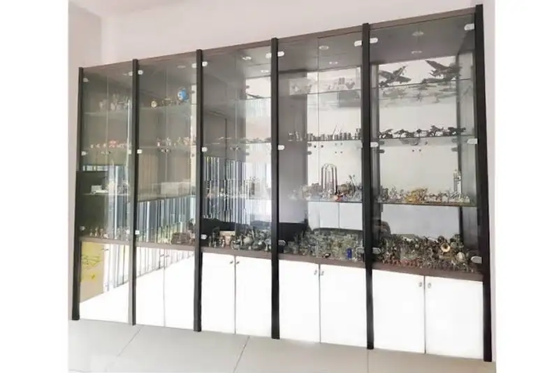

Daftar Isi
- Mengapa Lemari Display Penting di Lobi Kantor?
- Apa Kelebihan Kaca Tempered untuk Lemari Display?
- Bagaimana Memilih Ketebalan Kaca Tempered yang Tepat?
- Bagaimana Cara Memasang Lampu LED Strip pada Lemari Display?
- Apa Manfaat Kombinasi Kaca Tempered dan LED Strip?
- Apa yang Perlu Dipertimbangkan Sebelum Memesan Lemari Display Custom?
- Bagaimana Cara Merawat Lemari Display Kaca dan LED Strip?
- FAQ
Lemari display portofolio dan tropi di lobi utama adalah furnitur pajangan yang menampilkan pencapaian perusahaan, dan tampil lebih maksimal dengan kombinasi kaca tempered serta lampu LED strip sebagai pencahayaan aksen.
- Lemari display di lobi berfungsi sebagai representasi identitas dan pencapaian perusahaan kepada tamu.
- Kaca tempered dipilih karena faktor keamanan dan tampilan yang lebih premium dibanding kaca biasa.
- Lampu LED strip memberikan efek sorot yang membuat tropi dan portofolio terlihat lebih menonjol.
- Penempatan lemari display sebaiknya mempertimbangkan arah cahaya alami dan alur lalu lalang tamu.
- Perawatan rutin diperlukan agar kaca dan sistem pencahayaan tetap berfungsi optimal dalam jangka panjang.
Mengapa Lemari Display Penting di Lobi Kantor?
Lemari display penting di lobi kantor karena menjadi titik perhatian pertama tamu yang berkunjung dan berperan menyampaikan citra profesional serta pencapaian perusahaan secara visual.
Lobi merupakan area transisi yang membentuk kesan pertama terhadap sebuah perusahaan. Penataan lemari display yang rapi dan tertata dapat memberi kesan bahwa perusahaan memperhatikan detail, sekaligus menjadi sarana komunikasi non-verbal mengenai rekam jejak dan penghargaan yang pernah diraih.
Selain aspek citra, lemari display juga memiliki fungsi praktis sebagai tempat penyimpanan yang aman untuk barang bernilai seperti tropi, plakat, atau dokumen penghargaan, sehingga tidak diletakkan sembarangan di area kerja.
Apa Kelebihan Kaca Tempered untuk Lemari Display?
Kaca tempered menjadi pilihan utama untuk lemari display karena tingkat kekuatannya yang lebih tinggi dibanding kaca biasa serta pola pecahan yang lebih aman apabila terjadi benturan.
Secara umum, kaca tempered diproses melalui pemanasan dan pendinginan cepat sehingga memiliki struktur yang lebih kuat menahan tekanan dibanding kaca konvensional dengan ketebalan yang sama. Karakteristik ini membuatnya lebih tahan terhadap benturan ringan yang mungkin terjadi di area lobi dengan lalu lalang tinggi.
Dari sisi tampilan, kaca tempered juga menghasilkan permukaan yang lebih jernih dan rapi pada sambungan pintu lemari, sehingga barang yang dipajang di dalamnya terlihat lebih menonjol tanpa terhalang bingkai tebal.
Bagaimana Memilih Ketebalan Kaca Tempered yang Tepat?
Ketebalan kaca tempered untuk lemari display umumnya disesuaikan dengan ukuran panel dan beban visual barang yang dipajang, dengan panel yang lebih besar membutuhkan kaca yang relatif lebih tebal agar tetap stabil.
Bagaimana Cara Memasang Lampu LED Strip pada Lemari Display?
Lampu LED strip pada lemari display umumnya dipasang di bagian dalam rangka rak atau di tepi ambalan agar cahaya menyebar merata ke arah barang yang dipajang tanpa menyilaukan mata.
Penempatan LED strip biasanya mengikuti garis ambalan kaca, sehingga cahaya memantul lembut melalui permukaan kaca tempered dan menonjolkan detail tropi atau portofolio yang dipajang. Pemilihan suhu warna cahaya, misalnya warm white atau cool white, turut memengaruhi kesan visual yang ingin ditampilkan.
Jalur kabel LED strip sebaiknya dirancang tersembunyi di dalam rangka lemari sejak tahap produksi, bukan ditambahkan setelah lemari selesai dibuat, agar hasil akhir tetap rapi dan aman secara kelistrikan.
Apa Manfaat Kombinasi Kaca Tempered dan LED Strip?
Kombinasi kaca tempered dan LED strip menghasilkan tampilan lemari display yang terlihat premium sekaligus fungsional, karena cahaya membantu menonjolkan detail barang tanpa mengorbankan aspek keamanan kaca.
Apa yang Perlu Dipertimbangkan Sebelum Memesan Lemari Display Custom?
Sebelum memesan lemari display custom, pertimbangkan ukuran ruang lobi, jumlah dan jenis barang yang akan dipajang, serta arah pencahayaan alami di sekitar area penempatan.
- Ukuran dan proporsi lobi terhadap dimensi lemari display.
- Jumlah tropi, plakat, atau portofolio yang akan ditata.
- Arah cahaya alami dari jendela agar tidak bentrok dengan efek LED strip.
- Anggaran untuk material kaca tempered dan instalasi kelistrikan LED.
- Jasa kontraktor interior kantor custom yang berpengalaman menangani kombinasi kaca dan pencahayaan.
Bagaimana Cara Merawat Lemari Display Kaca dan LED Strip?
Perawatan lemari display kaca dan LED strip meliputi pembersihan permukaan kaca secara rutin serta pengecekan berkala pada sambungan kabel LED agar pencahayaan tetap berfungsi optimal.
Permukaan kaca tempered sebaiknya dibersihkan menggunakan kain lembut dan cairan pembersih kaca agar tidak meninggalkan goresan. Sementara itu, sistem LED strip perlu dicek secara berkala untuk memastikan tidak ada kabel yang longgar, terutama pada lemari yang sering dibuka-tutup.